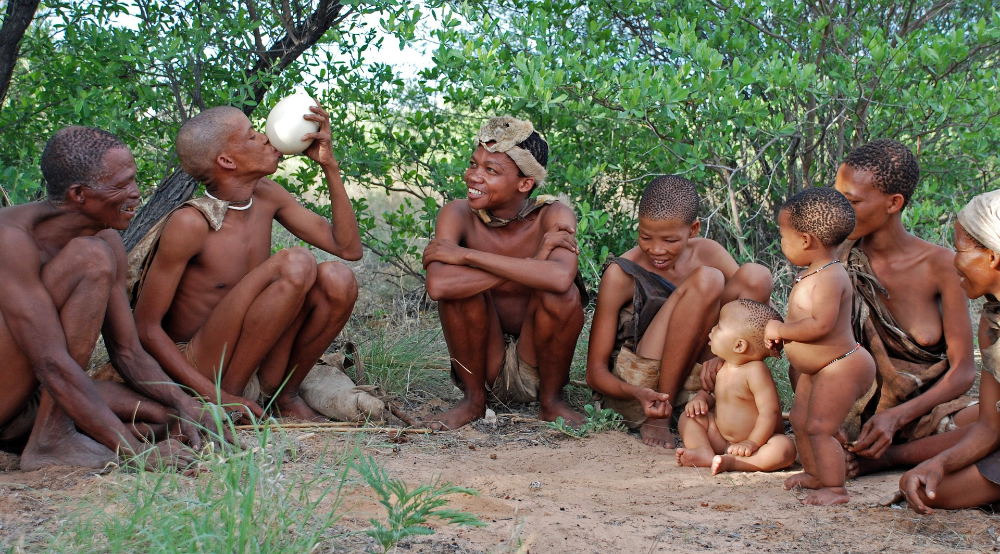
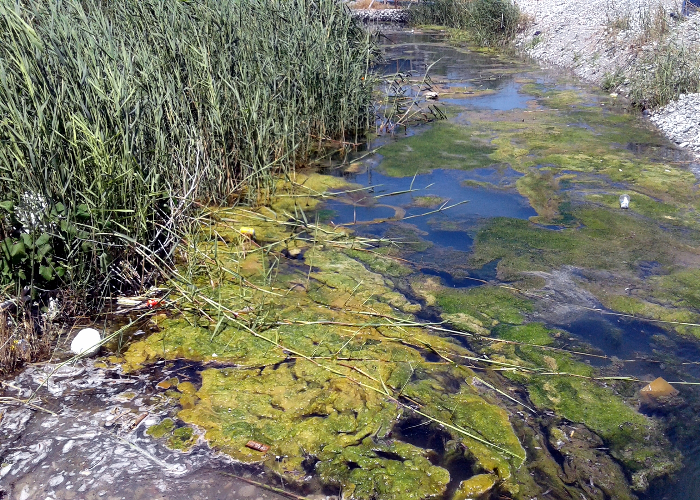

Menu
About
Introduction
Indigenous groups
Exotic species
Main threats
Donation
Prayer
Our team
Main threat: what is putting the Yasuni Park in danger?
1) Invading the territory of indigenous people
Under the ground of Yasuni National Park is
large oil fields
. In July 2019, the Waorani won an important legal victory to prevent oil activity in the western part of their territory
(Block 22)
.
However, the construction of new oil drilling platforms in the controversial
ITT Block
is ongoing. By estimating, the impacted area would be 655 hectares, which exceeds the limit of 300 hectares established in the public referendum of 2018.
ITT Block
ITT Block is one of the most remote and intact parts of Yasuni National Park. In 2007, the Ecuadorian government launched a unique initiative to keep ITT's oil underground in exchange for economic compensation from the international community. However, in 2013, the Initiative failed and was abandoned so the government is now actively advancing it's ITT oil extraction plans. In the picture, we can see 4 drilling platforms (Tambococha A,B,D,E) with yellow circle that involves the construction.

Zona Intangible(Untouchable Zone)
The government set up the
Zona Intangible
in 2007 as an area where extractive acitivites, including oil, are prohibited to protect the territory of indigenous people. There are plans for at least
3 more drilling platforms
deeper into Yasuni National Park, which would bring oil activity close to the buffer zone of an area known as the
Zona Intangible
, or Untouchable Zone. Almost two years later, on 25 January 2022, Monitoring the Andean Amazon Project (MAAP) again warned of the expansion of the road within a few hundred metres of the protected “Intangible Zone” of the Tagaeri and Taromenane indigenous peoples."
The platform, which is the most recent construction within the ITT Block, is located only 300 metres from the Intangible Zone buffer zone. We also warn of future construction that could enter the buffer zone and reach the boundary of the Intangible Zone itself,” says a report published on the MAAP website. Then in May, President Lenín Moreno signed a new decree that allows oil platforms to be constructed within the Intangible Zone’s buffer area, which was previously forbidden.

2) Destroying the region's exceptional biodiversity
Better equipment today has reduced the risk of spills and leaks, and new extraction sites no longer use gas flares that emit toxins into the atmosphere. Still, it’s impossible to prevent leaks entirely. In the case of the Amazon, extracting near bodies of water is particularly risky as these exacerbate the spread of oil. Locals and environmentalists are concerned that if there was a spill in any of the Tambococha wells, it would reach the lagoons and destroy the area.
About 410 million tonnes of carbon dioxide would be saved if the oil from the Yasuní-ITT is not burned. The process of extracting oil from the ground is extensive and precarious. The metal pipes inserted into the ground can corrode and weaken, making them vulnerable to rupture. If this occurs, the pipe’s contents will leach into the surrounding soil and water resulting in contamination.
The waste from drilling can also emit dust and natural gas (a by-product of oil drilling), which contribute to air pollution. Another by-product of oil drilling is water. However, the water is hardly potable. It is filled with metals like arsenic, mercury, lead, and cadmium, which are toxic to humans and animals. These metals bioaccumulate in body tissues and thus can infect organisms even if they do not come into direct contact with the source.
Reference video about "The rush for oil in Yasuni National Park"